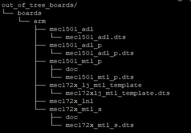

Port Basic EC FW to custom HW design¶
Overview¶
This application note contains generic guidelines to adapt basic EC open source to a custom HW design.
Basic Open EC FW is designed as an application that runs on Zephyr RTOS, this project links to Zephyr and other dependencies. As such this repo contains only application-specific files, most of EC SoC HW support is contained under Zephyr project.

EC SoC and architecture¶
When porting the application to custom hardware, we must ensure the desired EC SoC and architecture are already supported by Zephyr RTOS. Zephyr project is not limited to embedded controllers, but it supports major EC vendors: Microchip, ITE, Nuvoton, Realtek. However, even if an EC vendor is supported not all their EC chips have Zephyr support. Refer to Zephyr’s board support
Note that EC SoC support in Zephyr RTOS project needs to included all drivers required by Basic Open EC FW are available. The list below presents the minimum drivers required by the EC application to boot in an eSPI-based Intel platform.
UART
GPIO
RTOS timer
I2C - Port 80 visualization if board supports it.
eSPI - Required by power sequencing module
ACPI - Required by SMC host module (EC - BIOS interactions).
eSPI TAF - Required for EC flash sharing boot and boot configuration for EC as root of trust.
The following drivers are needed to exercise other non-boot critical features:
PS/2 - for PS/2 devices management
Keyscan - for keyboard matrix
These drivers are required to enable advanced features such as thermal and fan control.
PECI - for thermal module
TACH - for thermal module
ADC - for thermal module
PWM - for fan control
Board support¶
Zephyr’s RTOS HW model is defined in device tree files, where a board describes at least one SoC and all its features. Zephyr RTOS project repository supports many of EC vendors’ evaluation boards which can be used in standalone mode. The board files enumerate all EC HW features enabled for a HW design and their settings e.g. EC CPU frequency, which pins are used as I2C, UART, if eSPI enabled or not, etc.

On the other hand, in addition to EC FW application modules, this project provides additional out-of-tree boards for Intel Reference Platforms using an Embedded controller. These are based on EC SoC vendor reference evaluation board and modified using Zephyr board porting guide. Note the provided board device tree files are the same in all Intel RVP designs using same EC chip. This folder also contains the default KConfig for a board, this will list all Zephyr drivers to be enabled for a particular board.
Within the EC FW folders, the other relevant set of files are the ones that indicate which pins that are in GPIO mode and under direct control of EC FW. These files contain the EC GPIO mapping for a particular RVP design and their I/O configuration. Note that even among designs using same EC chip, the EC GPIOS could be mapped differently in each RVP family.
Since the MECC cards are usually supported as part of Zephyr RTOS project, they are not part of out-of-tree folder. Override for customization in such cases is done via both device tree overlay files.
EC porting guidelines¶
1. Create device tree board folder¶
1.1. Locate the closest reference design which defines the desired features under out-of-tree boards and gpio-mapping folders, e.g. if the design is based on Meteor lake and is intended for a mobile design take Meteor lake P as reference. To see all reference designs files use the following command:
tree out_of_tree_boards/ -P *.dts -I support
Above command will list all reference out-of-tree boards

1.2. Copy the folder or modify the board as needed, e.g. MTL-S LJ is an example of customization that refers to MTL-S but using different packaging.
MECC cards¶
To use a different MECC card with a different EC SoC vendor, the vendor should add its Hardware Abstraction Layer (HAL) and board support package (BSP) to Zephyr RTOS. See Zephyr’s porting guide
Custom HW¶
If the custom HW does not follow any of Intel RVP EC GPIO mapping, we need to create the board files using Zephyr generic guidelinesprovided by Zephyr https://docs.zephyrproject.org/latest/hardware/porting/board_porting.html#create-your-board-directory
2. Customize EC FW for a board¶
2.1 Map EC SoC drivers to application features¶
Zephyr uses device tree to describe hardware both EC SoC and board’s peripherals. Currently, the EC FW abstracts the device tree using friendly macros which can be customized when using different EC SoC and/or different board. See boards/<vendor> for more details.
#define I2C_BUS_0 DT_NODELABEL(i2c_smb_0)
For more details, see Zephyr’s device tree guide.
2.2 Create EC GPIO mapping¶
As indicated before, EC FW app does not control/configure all GPIOs in the chip but only the ones used by the app as GPIOs. When a pin is intended to be controlled by the EC FW framework it should be mapped under boardname_chipversion.h to corresponding Zephyr GPIO port and pin.
#define PCH_PWROK EC_GPIO_106 /* Board #1 Port A, Pin B */
#define PCH_PWROK EC_GPIO_036 /* Board #2 Port B, Pin C */
Note
EC_GPIO_XXX is a SoC specific macro, which abstracts GPIO port and GPIO pin number since Zephyr supports logical GPIO ports and EC FW requires the flexibility to map same signal to different port/pins.
Similarly, boardname_chipversion.c should contain the actual pin configuration required by the application input/output, open drain and so on. See Zephyr’s GPIO reference for Zephyr GPIO flags.
tree -L 2 boards/ -P *.c
2.3 Create EC board configuration override¶
To customize EC FW features per board, use a project file configuration overlay.
During compilation time, the board-specific settings will be applied after the overall EC FW default project settings and default board KConfig settings. This method allows to disabled features either unwanted or not yet ready to be evaluated.
Parsing ~/ecfw-zephyr/Kconfig
Loaded configuration '~/ecfw-zephyr/out_of_tree_boards/boards/arm/mec1501_mtl_p/mec1501_mtl_p_defconfig'
Merged configuration '~/ecfw-zephyr/prj.conf'
Merged configuration '~.ecfw-zephyr/boards/mec1501_mtl_p.conf'
3. Verify EC FW build for new board¶
Once aforementioned files are added, the EC firmware can be built using the configuration as any other Zephyr application.
https://docs.zephyrproject.org/latest/hardware/porting/board_porting.html#build-test-and-fix